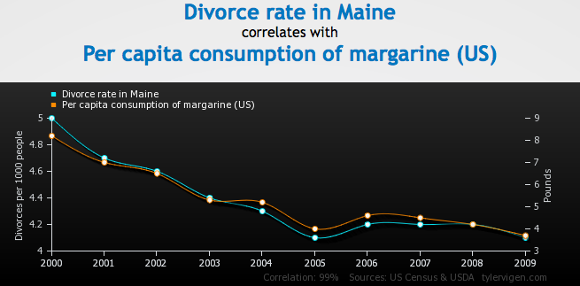

Samuel Burer
August 2022
Data is a fact of modern-day life
And there is lots of it!
Source: joannenova.com.au

Source: tylervigen.com
Source: ArsTechnica.com (2012-08-14)
How are business using data these days?
Are there any businesses in which data is not useful?
MIT study as reported in the New York Times on April 23, 2011:
[Companies] that adopted ‘data-driven decision making’ achieved productivity that was 5 to 6 percent higher than could be explained by other factors, including how much the companies invested in technology.
“The Risks of Quantification” by Dr. W. Byers at Concordia University (via hbr.org on May 18, 2011):